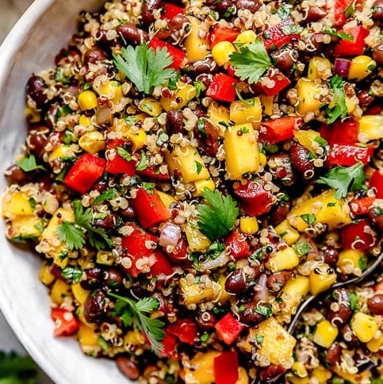

Spicy Mango and Black Bean Quinoa Salad
- 1 cup quinoa
- 2 cups water or vegetable broth
- 1 (15-ounce) can black beans, drained and rinsed
- 1 large mango, diced
- 1 red bell pepper, diced
- 4 green onions, thinly sliced
- 1/2 cup fresh cilantro, chopped
- 1/2 cup pepitas (pumpkin seeds), toasted
- 1/4 cup extra virgin olive oil
- 3 tablespoons fresh lime juice
- 1 tablespoon honey or maple syrup
- 1 teaspoon chipotle chili powder
- 1/2 teaspoon ground cumin
- Salt and pepper to taste

- Cook the Quinoa: Rinse the quinoa under running water. In a medium saucepan, bring the water or vegetable broth to a boil. Add the quinoa, reduce heat to low, cover, and simmer for 15 minutes. Remove from heat and let it sit, covered, for 5 minutes. Fluff with a fork and allow it to cool.
- Prepare the Salad: In a large bowl, combine the cooked quinoa, black beans, diced mango, red bell pepper, green onions, and chopped cilantro.
- Make the Dressing: In a small bowl, whisk together the olive oil, fresh lime juice, honey or maple syrup, chipotle chili powder, ground cumin, salt, and pepper.
- Assemble the Salad: Pour the dressing over the quinoa mixture and toss to combine. Taste and adjust seasoning if needed.
- Serve: Garnish the salad with toasted pepitas just before serving. This salad can be served immediately or chilled for a few hours to allow the flavors to meld.